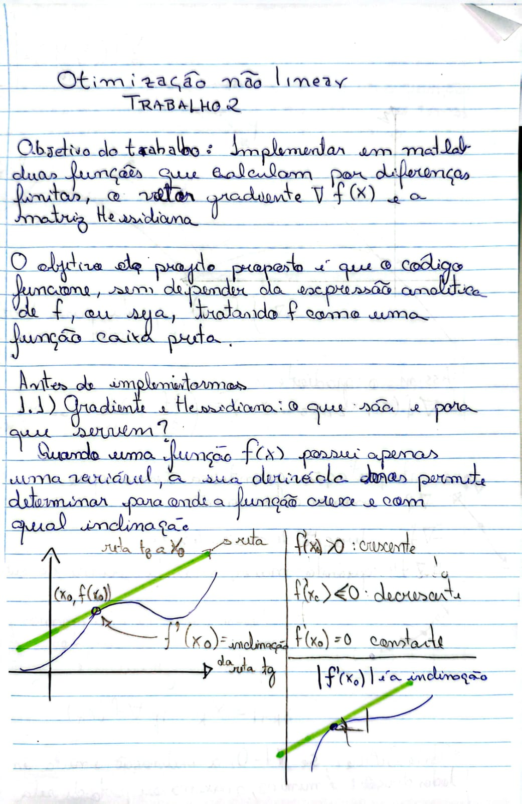
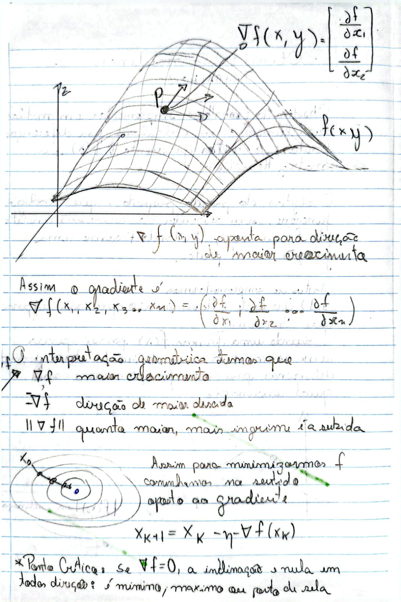
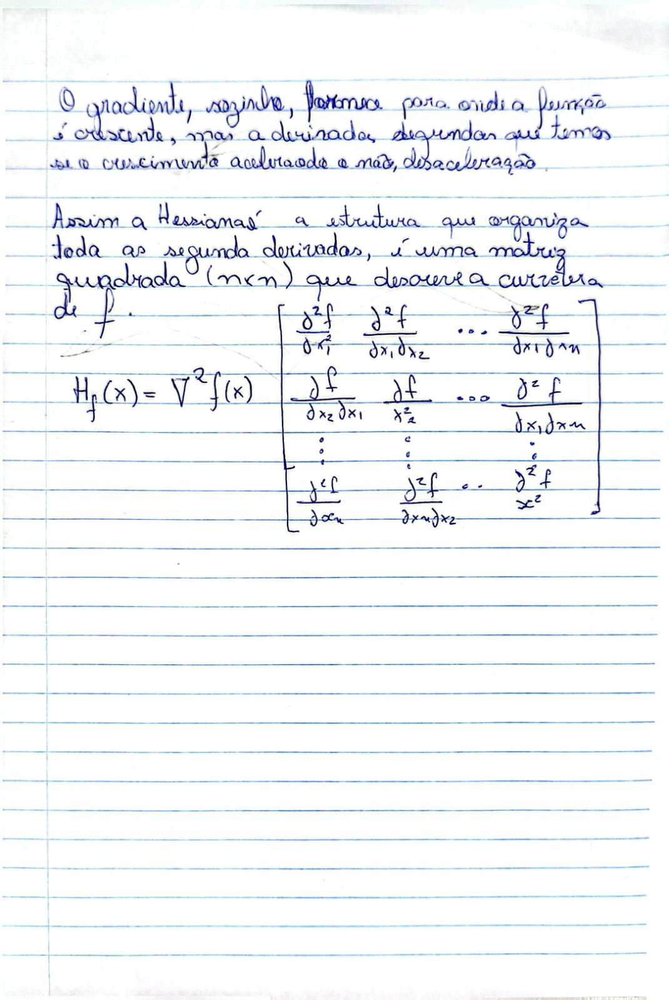

Otimização Não Linear — Trabalho 2
Romulo de Aguiar Beninca · Prof. Dr. Carlos Alberto Bavastri



| Função | Responsabilidade |
|---|---|
principal() | Script principal: define ponto e \( \varepsilon \), chama as rotinas e imprime os resultados. |
funcao_objetivo(x) | Avalia \( f(x) \) no ponto fornecido. |
calcular_gradiente(ponto, epsilon) | Retorna o vetor gradiente por diferença finita central. |
calcular_hessiana(ponto, epsilon) | Retorna a matriz Hessiana derivando o gradiente numericamente. |
comparar_com_simbolico(ponto) | Calcula gradiente/Hessiana simbólicos e mede o erro (norma) frente ao numérico. |
A ideia é simples: a função recebe um ponto e um passo pequeno (chamado de epsilon) e
calcula a inclinação da função em cada variável, uma de cada vez. Para isso ela soma e subtrai esse
passo na variável que está sendo analisada e mede o quanto a função mudou.
function grad = calcular_gradiente(ponto, epsilon)
n = length(ponto);
grad = zeros(1, n);
for i = 1:n
valor_original = ponto(i);
ponto(i) = valor_original + epsilon;
f_mais = funcao_objetivo(ponto);
ponto(i) = valor_original - epsilon;
f_menos = funcao_objetivo(ponto);
grad(i) = (f_mais - f_menos) / (2 * epsilon);
ponto(i) = valor_original; % restaura a variavel
end
end
A Hessiana segue a mesma ideia do gradiente, só que um nível acima. Em vez de medir como a função
muda, ela mede como o gradiente muda. Por isso, em vez de chamar
funcao_objetivo, esta função chama calcular_gradiente nos pontos para
frente e para trás. O resultado é guardado em uma matriz, uma coluna para cada variável.
function hess = calcular_hessiana(ponto, epsilon)
n = length(ponto);
hess = zeros(n, n);
for i = 1:n
valor_original = ponto(i);
ponto(i) = valor_original + epsilon;
grad_mais = calcular_gradiente(ponto, epsilon);
ponto(i) = valor_original - epsilon;
grad_menos = calcular_gradiente(ponto, epsilon);
hess(:, i) = (grad_mais - grad_menos)' / (2 * epsilon);
ponto(i) = valor_original;
end
enddo arquivo hessiana.m
% OTIMIZAÇÃO NÃO LINEAR - TRABALHO 2
% Gradiente e Hessiana por Diferenças Finitas Centrais
%
% Programa de Pós-Graduação em Engenharia Mecânica - UFPR
% Prof. Dr. Carlos Alberto Bavastri
% =========================================================================
function principal()
ponto = [3/2, -3/2, 3/2];
epsilon = 1e-3;
valor_f = funcao_objetivo(ponto);
fprintf('\n=== FUNÇÃO OBJETIVO ===\n');
fprintf('f(x) = %.6f\n', valor_f);
grad_numerico = calcular_gradiente(ponto, epsilon);
fprintf('\n=== VETOR GRADIENTE ===\n');
disp(grad_numerico);
hess_numerica = calcular_hessiana(ponto, epsilon);
fprintf('=== MATRIZ HESSIANA ===\n');
disp(hess_numerica);
fprintf('=== COMPARAÇÃO COM SOLUÇÃO SIMBÓLICA ===\n');
comparar_com_simbolico(ponto, epsilon);
end
function valor = funcao_objetivo(x)
valor = 2*x(1)^2 + x(2) + x(3)^2 - 2*x(1);
end
function grad = calcular_gradiente(ponto, epsilon)
n = length(ponto);
grad = zeros(1, n);
for i = 1:n
ponto_mais = ponto;
ponto_menos = ponto;
ponto_mais(i) = ponto_mais(i) + epsilon;
ponto_menos(i) = ponto_menos(i) - epsilon;
f_mais = funcao_objetivo(ponto_mais);
f_menos = funcao_objetivo(ponto_menos);
grad(i) = (f_mais - f_menos) / (2 * epsilon);
end
end
function hess = calcular_hessiana(ponto, epsilon)
n = length(ponto);
hess = zeros(n, n);
for i = 1:n
ponto_mais = ponto;
ponto_menos = ponto;
ponto_mais(i) = ponto_mais(i) + epsilon;
ponto_menos(i) = ponto_menos(i) - epsilon;
grad_mais = calcular_gradiente(ponto_mais, epsilon);
grad_menos = calcular_gradiente(ponto_menos, epsilon);
hess(:, i) = (grad_mais - grad_menos)' / (2 * epsilon);
end
end
function comparar_com_simbolico(ponto, epsilon)
% funcção feita so para comparar se o resultado do gradiente e da hessiana numérica está correto com o resultado simbólico
% não foi solicitada professor, mas achei interessante fazer para validar o código
syms x1 x2 x3
f_sym = 2*x1^2 + x2 + x3^2 - 2*x1;
grad_sym = gradient(f_sym, [x1, x2, x3]);
hess_sym = hessian(f_sym, [x1, x2, x3]);
grad_exato = double(subs(grad_sym, [x1, x2, x3], ponto))';
hess_exata = double(subs(hess_sym, [x1, x2, x3], ponto));
grad_numerico = calcular_gradiente(ponto, epsilon);
hess_numerica = calcular_hessiana(ponto, epsilon);
erro_grad = norm(grad_numerico - grad_exato);
erro_hess = norm(hess_numerica - hess_exata, 'fro');
fprintf('\nGradiente exato:\n');
disp(grad_exato);
fprintf('Hessiana exata:\n');
disp(hess_exata);
fprintf('Erro no gradiente: %.2e\n', erro_grad);
fprintf('Erro na Hessiana: %.2e\n', erro_hess);
end